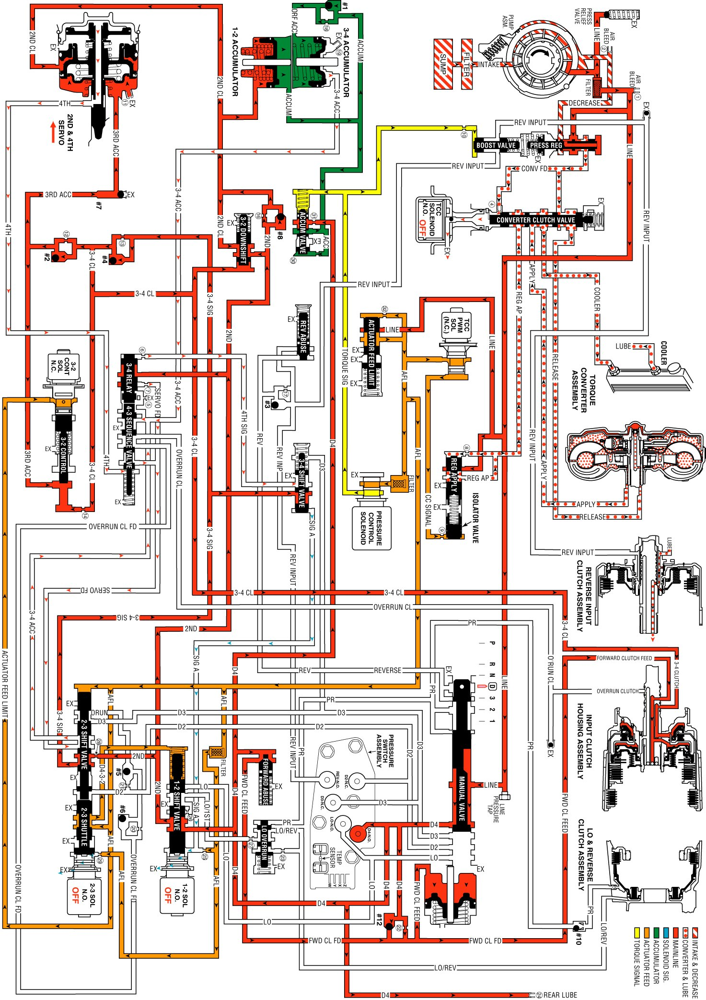

Overdrive Range, 4-3 Downshift
Overdrive Range, 4-3 Downshift
When the transmission is operating in fourth gear, a forced 4-3 downshift occurs if there is a significant increase in throttle position. At minimum throttle, the vehicle speed decreases gradually (coastdown) and the PCM commands a 4-3 downshift. The PCM also initiates a forced 4-3 downshift when the throttle position remains constant but engine load is increased, such as driving up a steep incline. To achieve a 4-3 downshift, the PCM de-energizes the 1-2 shift solenoid valve and the following changes occur to the transmission's electrical and hydraulic systems:
1-2 Shift Solenoid (SS) Valve
De-energized by the PCM, the normally open solenoid opens and signal A fluid exhausts through the solenoid.
1-2 Shift Valve
As in Fourth gear, D432 fluid pressure and spring force hold the valve in the upshift position.
2-4 Band Releases
3-4 Shift Valve
With the signal A fluid pressure exhausted, the spring force moves the valve into the downshift position. In this position, the valve blocks the 3-4 signal fluid and the 4th signal fluid exhausts past the valve.
3-4 Relay Valve and 4-3 Sequence Valve
These valves control the timing of the 2-4 band release. With the 4th signal fluid pressure exhausted, the 3-4 accumulator fluid pressure moves the 3-4 relay valve into the third gear position. This opens the 3-4 accumulator fluid to an orificed exhaust (#5) past the 3-4 relay valve (shown by red arrows). Because the exhaust is orificed, the 3-4 accumulator fluid pressure momentarily holds the 4-3 sequence valve against spring force before completely exhausting.
When the exhausting 3-4 accumulator fluid pressure decreases sufficiently, the spring force moves the 4-3 sequence valve into the third gear position as shown. This opens both the 3-4 accumulator and the 4th fluid circuits to a quick exhaust past the 4-3 sequence valve. In this position the valve blocks the 2nd fluid from entering the servo feed fluid circuit.
2-4 Servo Assembly
The 4th fluid exhausts from the 4th apply piston in the servo assembly. The apply pin spring moves the 4th apply piston and the apply pin in order to release the band from the reverse input drum and shift the transmission into third gear.
3-4 Accumulator Assembly
The 3-4 accumulator fluid exhausts from the 3-4 accumulator piston. The orificed accumulator fluid pressure and the spring force move the piston into a third gear position.
3-4 Accumulator Checkball (#1)
As the accumulator fluid fills the 3-4 accumulator, it seats the #1 checkball and is forced through orifice #18. This orifice controls the rate at which accumulator fluid pressure fills the 3-4 accumulator and the 3-4 accumulator fluid exhausts from the accumulator assembly.
Accumulator Valve
Biased by torque signal fluid pressure and spring force, the accumulator valve regulates the D-4 fluid into the accumulator fluid circuit.
2-3 Shift Solenoid (SS) Valve
This solenoid remains de-energized as in fourth gear and the signal B fluid exhausts through the solenoid.
2-3 Shift Valve Train
The AFL fluid pressure at the 2-3 shift valve holds the valves in the upshift position. This allows the servo feed fluid to exhaust through the valve, into the 3-4 accumulator fluid circuit and past the 4-3 sequence valve.
Torque Converter Clutch Solenoid Valve
TCC PWM Solenoid Valve
The PCM de-energizes the TCC solenoid valve, and operates the duty cycle of the TCC PWM solenoid valve to release the converter clutch for a smooth disengagement, prior to initiating the 4-3 downshift.
Pressure Control (PC) Solenoid Valve
Remember that the PC solenoid valve continually adjusts the torque signal fluid pressure in relation to the various PCM input signals (mainly the throttle position).
Overdrive Range, 4-3 Downshift
Overdrive Range, 4-3 Downshift:
